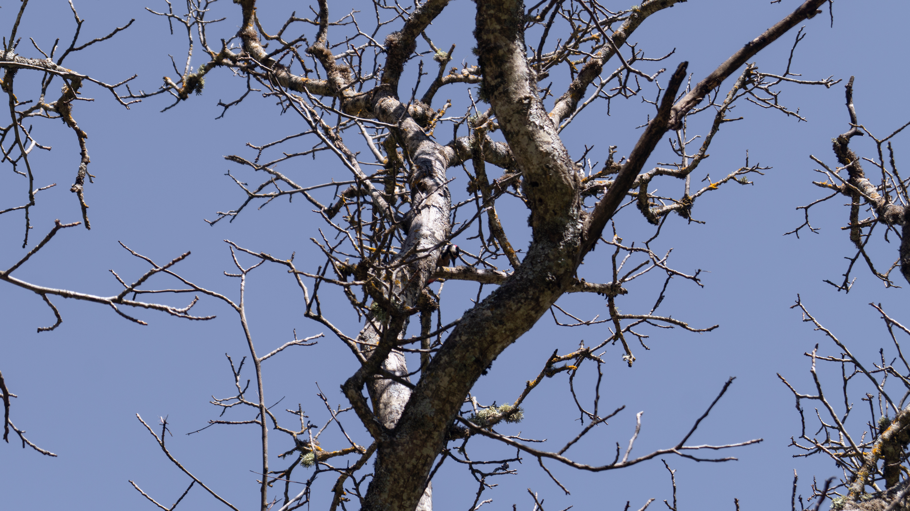
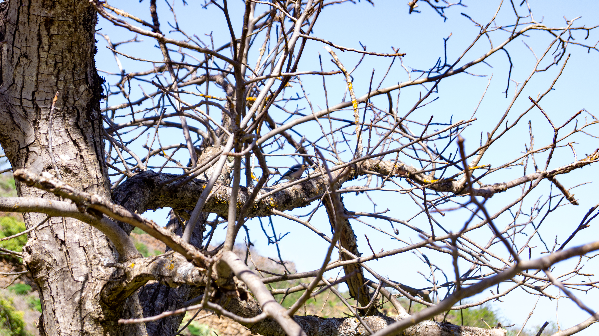

Fringilla canariensis · pinzón canario
Pinzón canario
Observado en Las Lagunetas, en un entorno de monte húmedo de medianías, a una altitud aproximada de 1.200 m sobre el nivel del mar.
Una primera mini colección real para fijar el tono de la web: pocas imágenes, elegidas con calma, y presentadas como parte de una fototeca de naturaleza que podrá crecer después por especies, lugares y hábitats.
Esta galería está pensada como una colección breve y elegante. Más adelante podremos añadir nombres de especies, localización, fecha, hábitat y búsqueda más inteligente sin romper este diseño.
Observado en Las Lagunetas, en un entorno de monte húmedo de medianías, a una altitud aproximada de 1.200 m sobre el nivel del mar.

Fotografiado en Las Lagunetas, dentro del ambiente forestal de la zona, también en torno a los 1.200 m de altitud aproximada.

Un segundo encuentro con la misma especie en Las Lagunetas, dentro del paisaje forestal de montaña característico de esta altitud.